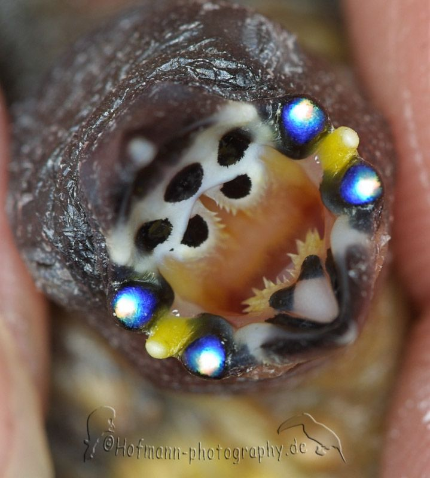

Digging Deeper: Evolution of Burrowing and Behavioral Traits in Lagomorphs
Lagomorphs—hares, rabbits, and pikas—are closely related, yet show striking diversity in their behavior, sociality, and life history. Some dig their own burrows, some use burrows made by others, while others live in rocky crevices or open nests (Species specific traits). This variation offers a unique window into the evolution of animal behavior and its relationship to ecological pressures.Burrowing is a particularly intriguing trait. It's energetically costly, yet may offer key advantages like thermal regulation and predator avoidance. But how does this behavior connect with other traits like sociality and life history strategies? Are burrowers more social? Do they have different life history traits? And what drives these patterns—climate, body size, or evolutionary history?
To explore these questions, I reconstructed the first comprehensive, time-calibrated phylogeny of Lagomorpha, using a combination of public exome data and primary whole-genome sequencing to resolve key relationships. This evolutionary tree allowed me to trace the origins and transitions of behavioral traits across the group.
Figure 1:Well-resolved phylogeny of Lagomorpha (90% nodes with bootstraps > 90) constructed using a combination of exomes and multi-locus markers. Species annotated with stars represent species placed on phylogeny with whole genome sequencing in this study.
Key findings include:
a) The common ancestor of modern pikas (Ochotonidae) was likely burrowing, while the ancestor of rabbits and hares (Leporidae) lived in open forms or borrowed burrows.
b) Rock-dwelling behavior in some pikas evolved secondarily from burrowing ancestors in the genera Conothoa and Pika.
c) Contrary to expectations, burrowing was not associated with colder, hotter, or more variable climates (thermoregulatory hypothesis) or with more open landscapes (anti-predation hypothesis).
d) Life history traits—such as fecundity—did not clearly track with body size or climatic envelopes.
However, a strong pattern emerged: burrowing species tended to be more social and had more r-selected life histories (higher reproductive rates), while rock-dwelling species were more solitary and K-selected. This supports a burrowing–sociality–fecundity link where the energetic costs of burrowing may favor both social living and faster reproduction. Although large-scale data didn't confirm burrowing as a current adaptation to environmental extremes, ongoing field work on pika burrows suggests that they provide significant cooling advantages during summer heat, more so than keeping pikas warm in the winter. Historically, burrowing may have been crucial in helping these animals survive glacial cycles on the Qinghai-Tibetan Plateau, by buffering them against dramatic climate swings. Together, these findings suggest that behavioral evolution is deeply entwined with life history strategies, and that burrows may have played a critical—if complex—role in the ecological success of Lagomorphs.
Figure 2:Burrowing-Sociality-Fecundity triangle describing associations between traits. The thickness of the arrows and the number of ‘+’ marks indicate the strength of relationships, as seen in Lagomorpha.
The Evolution of Finch Mouth Markings: Signals, Strategy, or Chance?
Young Estrildid finches display distinct mouth markings that vary in color, shape, and structure across species that dissapear before fledging. While it’s known that vocal signals help young birds communicate with their parents to receive food, it raises the question—do these unique mouth markings serve a similar purpose? Alternatively, these mouth markings could have evolved in response to pressures of brood parasitism

To explore this, we studied the evolutionary history of these traits using stochastic character mapping on a detailed finch family tree. We used open source photographs of finch mouth markings from aviaries around the world including published work to score different parts of the mouth for color and markings/patterns. We inferred the ancestor of all Estrildid finches to have extremely simple mouth features in contrast to species at current timescales
.
We also investigated whether these features are adaptive today by analyzing how factors like brood parasitism, resource abundance and sibling competition may influence their development. Our findings suggest that: a) mouth marking color/patterns were not different across habitats with differentially resource abundance, but species with larger clutch sizes (higher sibling competition) had carotenoid-colored mouths. These colors could potentially be indicators of quality to parents while allocating food items to chicks; b) Parasite mouth markings don't exactly match that of their hosts especially in instances when the parasite has multiple hosts. It must be noted however, that species in the Australasian clade that lack brood parasites have the most elaborate mouth markings. Taken together, our results point to a mix of evolutionary pressures. We hypothesize that ancient brood parasitism by members of the Viduidae family before the split of the African and Australasian clades, along with genetic drift, best explains the complex and uneven distribution of mouth markings observed today.